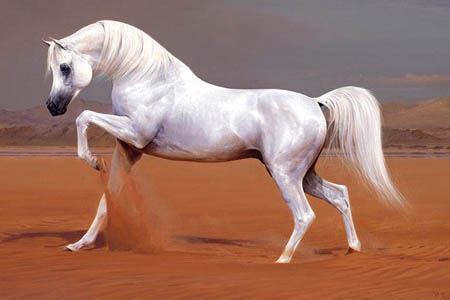
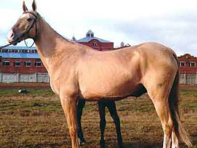
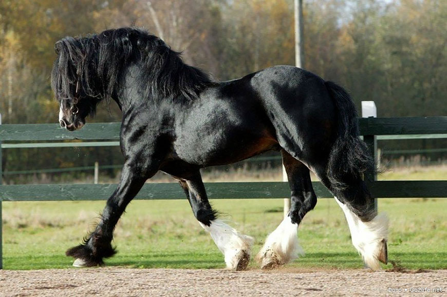

Породи коней
Породи коней: опис, особливості
На сьогодні у світі зареєстровано величезну кількість порід коней, кожна з них відрізняється зовні, призначенням, походженням, методами розведення. Єдиної класифікації породистих коней на сьогодні немає, вони розрізняються за різними ознаками.
Верхові породи коней
Верхові породи коней використовуються для верхової їзди, туризму, іподрому. До верхових належать такі породи коней.

Ахалтекінська. Ця порода з'явилася приблизно 5 тисяч років тому на території сучасного Туркменістану і є однією з найдавніших. Представники цієї породи коней зовсім невибагливі в їжі, попри зовнішню крихкість і витонченість, відмінно пристосовані до їзди й довго не втомлюються, вони зовсім не мають надлишкових жирових відкладень. Їхні масті найрізноманітніші, але найбільш цінуються рідкісні забарвлення, такі масті як бура, каракова, ізабеллова та солова.
Арабська. Порода з'явилася ще в 4-7 століттях на Аравійському півострові. Є нащадками величезної кількості інших порід і сьогодні використовуються у схрещуванні для поліпшення інших порід. Дуже витривалі, беруть участь у кінних пробігах, можуть пробігти до сотні миль. Допускаються такі масті: сіра, руда, гніда, ворона. Мають увігнутий профіль, маленькі вуха, косо поставлені плечі, високо посаджений хвіст.
Терська. Молода порода, яка з'явилася понад 60 років тому. Задля її появи використовувалися арабські, стрілецькі, донські й інші породи коней. Свою назву отримала від Терського кінного заводу, на якому і з'явилася. Ці коні мають міцну конституцію, за розміром вони більші за арабських, але дуже схожі зовні. У них яскраво виражена східна породність і сильні ноги. Найчастіше мають світло-сіру масть, яка відливається матовим сріблястим кольором. Це спортивні коні, їх активно використовують у прокаті, кінному туризмі.
Упряжні породи коней
Упряжні породи коней, відповідно, призначені для різнобічного використання в упряжі. Вони поділяються на легкоупряжних і важкоупряжних.
До перших належать такі породи, як орловський кінь. Це відома російська порода, в упряжі вона біжить жвавою риссю. Порода з'явилася майже 250 років тому, особливо відома використанням у трійках. Задля її створення використовували арабську, голландську, мекленбургську та інші породи коней. Вважається великою породою, найпопулярніші масті - сіра, червоно-сіра, сіра в яблуках, рідше трапляються гніда, ворона, руда та чала масті, зовсім рідкісні - булані та солові. Шия високо поставлена, вигин - лебединий, ноги - міцні, спина – м’язиста, мають дуже пишну гриву та хвіст. Інші легкоупряжні породи коней - німецький рисак, французька рисиста, мезенська, хакне
До важкоупряжних відносять такі породи коней:
-  Шайр - найвищий кінь у світі, може досягати 219 см, вага - до півтори тонни. Допустима будь-яка масть, характерні залисини на голові та білі панчохи.
- Тінкер ірландська порода, яку також називають Циганською через змішання крові. Мають середній зріст, міцні й сильні ноги. Масть характеризуються трьома типами, бувають чубарі, чалі, вороні з білими мітками. Можуть бути як великими - 160 см і 700 кг, так і порівняно невеликими - 135 см і 240 кг. Представники цієї породи коней популярні серед початківців вершників
- Вятська порода частіше використовується як домашній кінь, відрізняється спокоєм і високою працездатністю. Мають міцне тіло, середній зріст - приблизно 150 см, широкий лоб, коротку шию, короткі ноги, пишну гриву.
- Торійська. Є результатом схрещування низькорослих естонських кобил із норфолк-родстер, чим пояснюється її зовнішність - короткі кінцівки, округле тіло, невелика голова. Середня висота складає 154 см. Найпопулярніша масть - руда та гніда, трапляються вороні й чалі коні. Мають високу працездатність і спокійний характер, тому популярні як домашні коні.
Комбіновані породи коней
Є породи для комбінованого використання, які використовують і для верхових, і для запряжних, і для в'ючних цілей. До них належать башкирська, карачаївська, якутська, фризька, кабардинська, донська, кустанайська тракененська, казахська порода коней. Останні використовуються як верхові, в'ючні та м'ясо-молочні. До казахської породи часто відносять кушумського та мугалжарського коней.
відео про коней в ютуб кінь на другій сторінці сайту